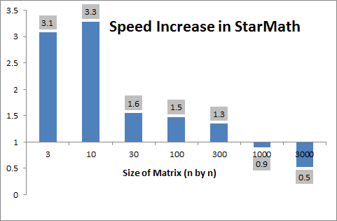
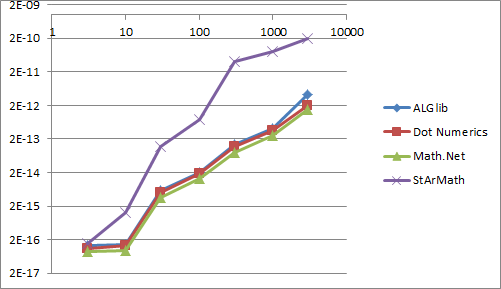
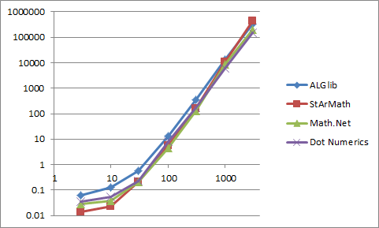
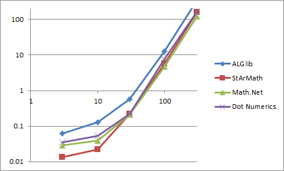
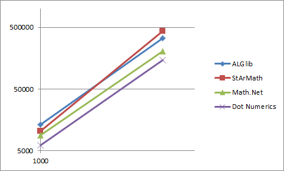

While there are already countless math libraries for performing common matrix/array functions, StarMath is distinguished by its simplicity and flexbility. There is no need to declare vectors and matrices in a specific library format. It works simliar to Math.function calls in C#.
In the latest version of the source code, you can find an example that benchmarks the speed of StarMath in doing matrix inversion to that of similar packages:
All of these have many more functions than what I am currently supporting, and before I went about repeating their efforts (introducing Successive Over-Relaxation, eigenvalues determination, pseudoinverse, and Singular Value Decomposition), I wanted to see if there was anything unique or worthwhile about my approach.
One thing to note: all of these are based directly on the original LINPACK (http://www.netlib.org/linpack/) and BLAS (http://www.netlib.org/blas/) code written in Fortran many moons ago – just like Matlab. But when you look close at that code you see that it’s very hard to follow and not written very cleanly or efficiently. Perhaps, some of the coding decisions are no longer valid given the types of functions in-built to modern computers and computer languages like C#, and Java.
So, I tested how quickly these tools could invert a full, general matrix compared to StarMath from a 3x3 (that's 9 cells) to a 3000x3000 (9 million cells). StarMath on average outperforms these leading matrix manipulation libraries for matrices less thatn 500x500. The following figure shows the speed increase in this library over the competition.

In other words, you can invert 3.3 10-by-10 matrices in StarMath in the time it takes to do this in competing techniques.
However, my approach seems to be less accurate, but given that these are all analytical results, the error is all less that 1e-10 (fraction of the average data values in the matrix).

In more detail, this is how the curves were created. A random matrix was created with values between –100 and +100 in each cell. Each random matrix was sent to each tool to determine the matrix’s inverse. This was done for matrix sizes at: 3, 10, 30, 100, 300, 1000, and 3000. The experiment was averaged over as many as 50 for small matrix but only 3 for the 3000x3000 matrix (see code for details).
Here is the complete plot for times:

It is more informative to break this into two plots representing the low and high ranges.
 
The first figure in this document is created by averageing the other three lines and dividing it by the StarMath times.
It is important to note that in both Math.Net and Dot Numerics, one must use their base classes for matrix instead of a 2D double array (double[,]). I include in the times the conversion to create these objects, which one may view as unfairly biasing against those methods. This makes a more significant dent in Dot Numerics performance, which otherwise is close to StarMath. But I view the conversion to their Matrix class as a necessary evil. Who knows what pre-processing is done on the matrix when put into these classes (well, it wouldn’t be hard to check, it is all open-source at least)? But, this is the whole impetus for StarMath. Don’t make the programmer have to adopt a new class just to do a straightforward calculation. Matrix calculations should be static functions that work on simple arrays (hence the name).